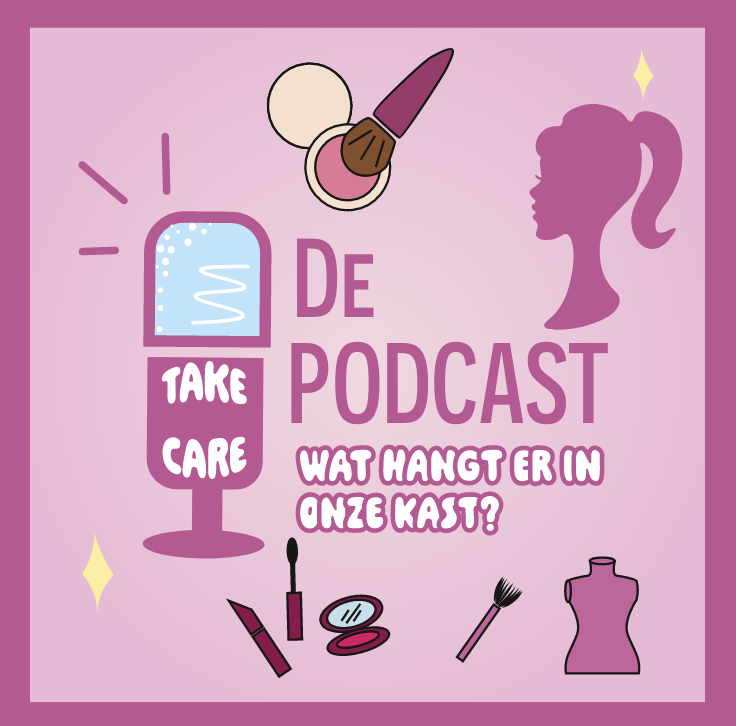
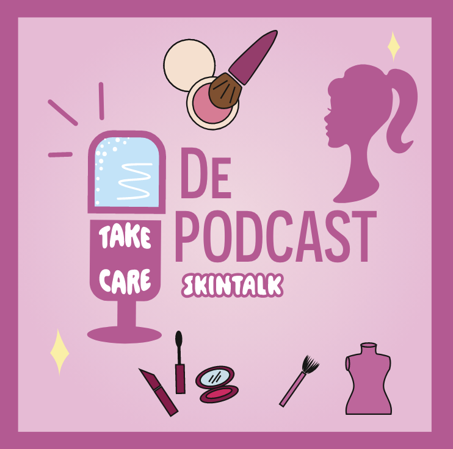
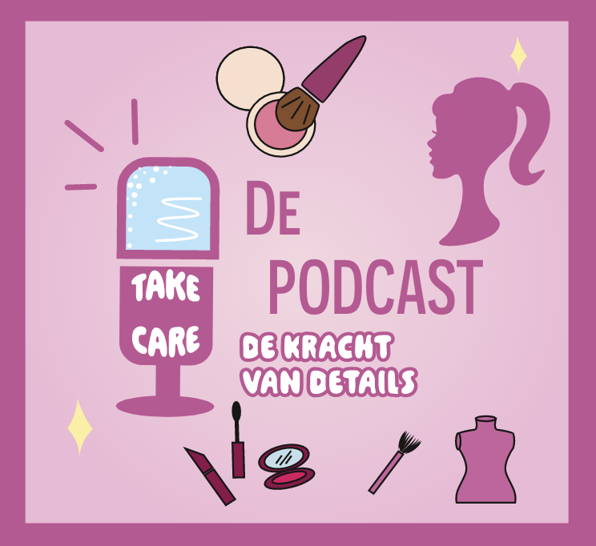

ONZE AFLEVERINGEN

Aflevering 1
MAKE-UP LOOKS GOOD
In deze aflevering gaan we het hebben over make-up. Elk meisje begint vanaf de middelbare school make-up te dragen. Vaak weten meiden dan nog niet hoe ze hun make-up goed moeten aanbrengen en welke producten mooi en goed voor hun huid zijn. In zo'n aflevering delen wij bijvoorbeeld welke producten en merken goed en bekend zijn. Wij delen ook onder andere onze ervaringen met bepaalde producten en merken. Ten slotte delen we nog welke producten wij zelf gebruiken.
 Lees meer
Lees meer
Aflevering 2
DE NIEUWSTE TRENDS
Trends die komen en gaan. Het is daarom interessant om te kijken waarom ze bijvoorbeeld weer uit de mode raken en waarom ze weer in de mode raken.
Lees meerAflevering 3
WAT HANGT ER IN ONZE KAST
In deze aflevering gaan we het hebben over kleding. Veel meiden veranderen van kledingstijl door mee te gaan met trends, maar hebben dan niet altijd hun eigen stijl. In deze aflevering hebben we het over verschillende stijlen, waarbij per stijl bijvoorbeeld een trend is en wat voor kleding wij zelf dragen.
 Lees meerAflevering 4
SKINTALK
In deze aflevering gaan we het hebben over skincare. Skincare is een belangrijk element. Het is goed voor de huid en toch ook wel een extraatje als het gaat om de verzorging van jezelf. We gaan onze eigen tips, adviezen en meningen delen en onder andere de trends bespreken op het gebied van skincare.
 Lees meerAflevering 5
DE KRACHT VAN DE DETAILS
In deze aflevering gaan we het hebben over accessoires. Wij vinden dat accessoires echt je outfit afmaken. Je kunt je outfit stijlen met grote oorbellen of een grote riem. We gaan het hebben over wat influencers of modellen doen en welke trends er allemaal zijn die een statement maken.
 Lees meerAflevering 6
DAGELIJKS LEVEN MET SOCIAL MEDIA
Social media is tegenwoordig heel erg groot, vooral onder de jonge generatie. Denk aan platforms zoals TikTok, Instagram en Snapchat. Het beïnvloedt ons op wat er momenteel in de mode is, maar leert ons ook handige tips en tricks.
Lees meer